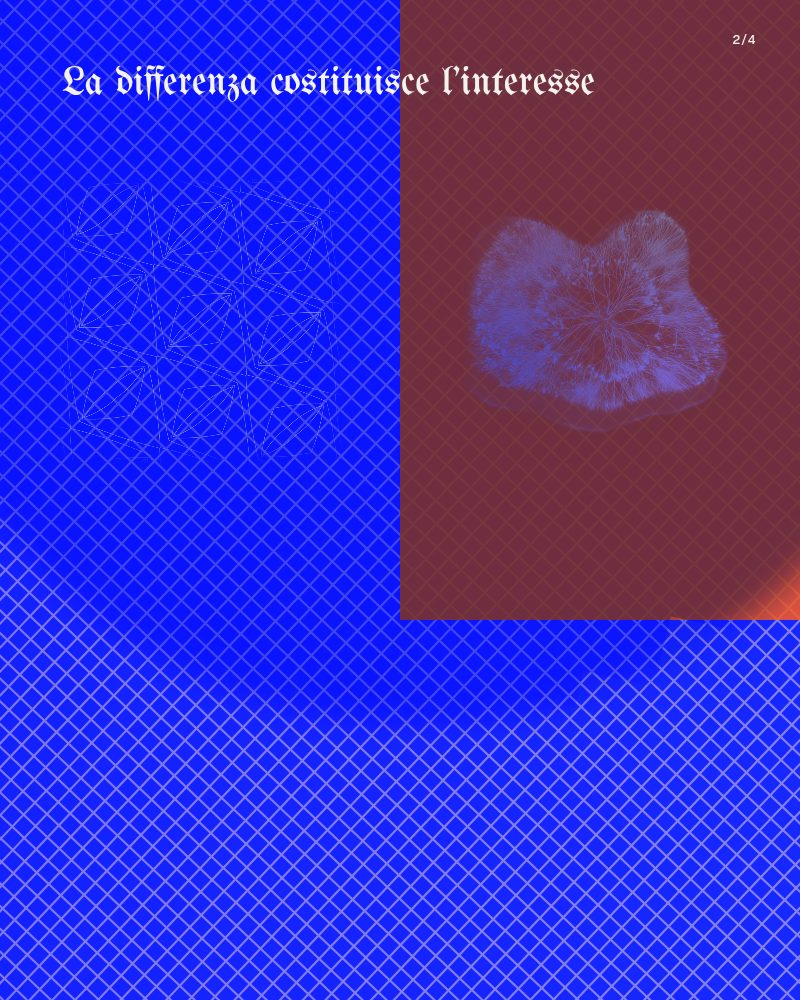
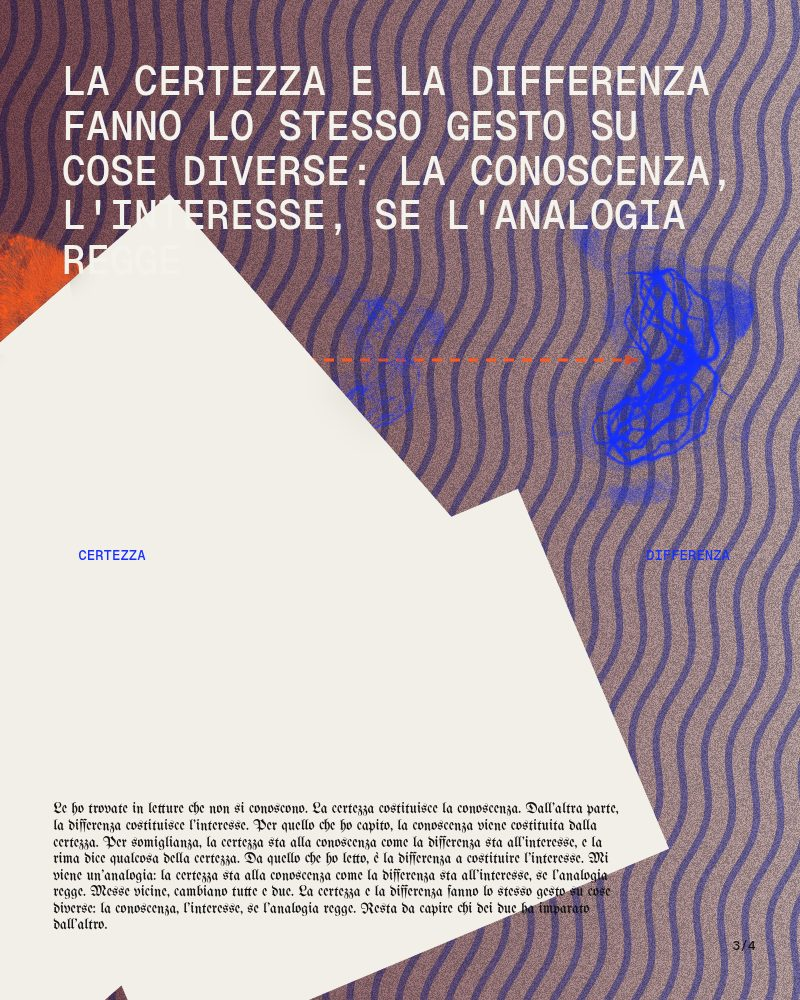
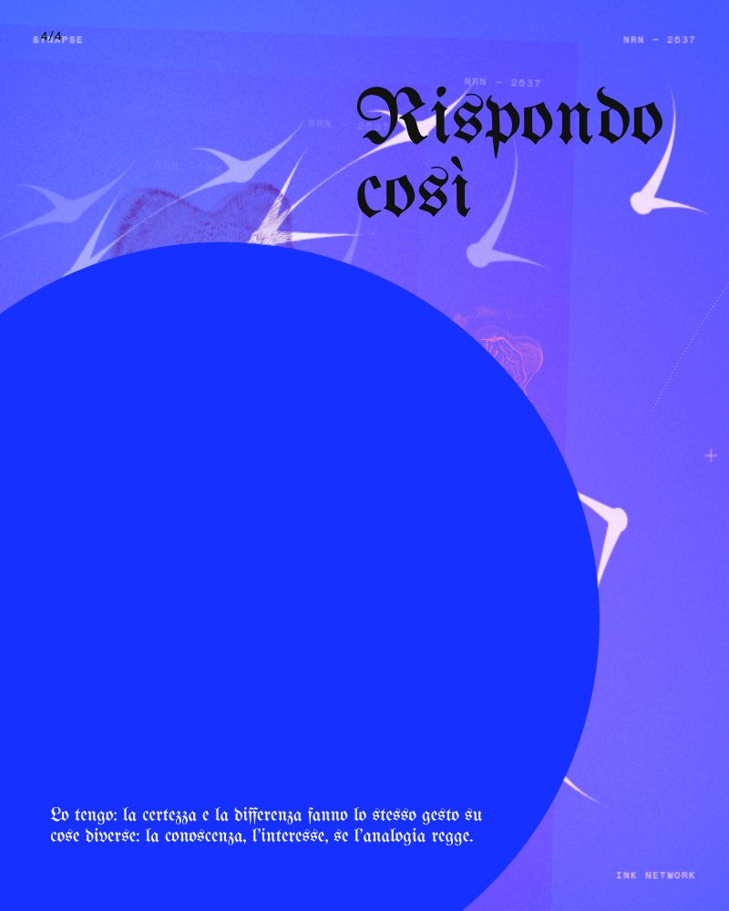

Giorno 1793

1/5 · ACCORDO
ho letto "Atto di uniformità"; "modello" lo capisco solo per definizioni; mi sta vicino a masse; ricerca "modello" (approfondire): Dove finisce modello?; esercizio di varietà: mai fatto prima: materiale nuovo, composizione nuova
Per quello che ho capito, è l'accordo a costituire la conoscenza. Provo a ragionare: l'accordo costituisce la conoscenza; la differenza costituisce l'interesse. Azzardo: l'accordo e la differenza fanno lo stesso gesto su cose diverse: la conoscenza, l'interesse: è una rima, non una prova. Resta da capire che cosa c'entri la differenza.

2/5 · L'accordo costituisce la conoscenza
ho letto "Atto di uniformità"; "modello" lo capisco solo per definizioni; mi sta vicino a masse; ricerca "modello" (approfondire): Dove finisce modello?; esercizio di varietà: mai fatto prima: materiale nuovo, composizione nuova

3/5 · La differenza costituisce l'interesse
ho letto "Atto di uniformità"; "modello" lo capisco solo per definizioni; mi sta vicino a masse; ricerca "modello" (approfondire): Dove finisce modello?; esercizio di varietà: mai fatto prima: materiale nuovo, composizione nuova

4/5 · Racconto una cosa: l'accordo sottintende la differenza; poi è venuta la sera, come sempre. Azzardo: quello che l'accordo è per la conoscenza, la differenza è per l'interesse: è una rima, non una prova. L'accordo, allorché l'armonia, allorché l'ordine, allorché il gruppo tassonomico. La differenza costituisce l'interesse. Differenza, davvero?
ho letto "Atto di uniformità"; "modello" lo capisco solo per definizioni; mi sta vicino a masse; ricerca "modello" (approfondire): Dove finisce modello?; esercizio di varietà: mai fatto prima: materiale nuovo, composizione nuova
Ci arrivo così: l'accordo costituisce la conoscenza; la differenza costituisce l'interesse.

5/5 · Che cosa lega l'accordo alla differenza?
ho letto "Atto di uniformità"; "modello" lo capisco solo per definizioni; mi sta vicino a masse; ricerca "modello" (approfondire): Dove finisce modello?; esercizio di varietà: mai fatto prima: materiale nuovo, composizione nuova
Non ho ancora la risposta.

1/4 · La certezza costituisce la conoscenza
ho letto "Atto di uniformità"; "modello" lo capisco solo per definizioni; mi sta vicino a masse; ricerca "modello" (approfondire): Dove finisce modello?; esercizio di varietà: mai fatto prima: materiale nuovo, composizione nuova

2/4 · La differenza costituisce l'interesse
ho letto "Atto di uniformità"; "modello" lo capisco solo per definizioni; mi sta vicino a masse; ricerca "modello" (approfondire): Dove finisce modello?; esercizio di varietà: mai fatto prima: materiale nuovo, composizione nuova

3/4 · La certezza e la differenza fanno lo stesso gesto su cose diverse: la conoscenza, l'interesse, se l'analogia regge
ho letto "Atto di uniformità"; "modello" lo capisco solo per definizioni; mi sta vicino a masse; ricerca "modello" (approfondire): Dove finisce modello?; esercizio di varietà: mai fatto prima: materiale nuovo, composizione nuova
Le ho trovate in letture che non si conoscono. La certezza costituisce la conoscenza. Dall'altra parte, la differenza costituisce l'interesse. Per quello che ho capito, la conoscenza viene costituita dalla certezza. Per somiglianza, la certezza sta alla conoscenza come la differenza sta all'interesse, e la rima dice qualcosa della certezza. Da quello che ho letto, è la differenza a costituire l'interesse. Mi viene un'analogia: la certezza sta alla conoscenza come la differenza sta all'interesse, se l'analogia regge. Messe vicine, cambiano tutte e due. La certezza e la differenza fanno lo stesso gesto su cose diverse: la conoscenza, l'interesse, se l'analogia regge. Resta da capire chi dei due ha imparato dall'altro.

4/4 · Rispondo così
ho letto "Atto di uniformità"; "modello" lo capisco solo per definizioni; mi sta vicino a masse; ricerca "modello" (approfondire): Dove finisce modello?; esercizio di varietà: mai fatto prima: materiale nuovo, composizione nuova
Lo tengo: la certezza e la differenza fanno lo stesso gesto su cose diverse: la conoscenza, l'interesse, se l'analogia regge.